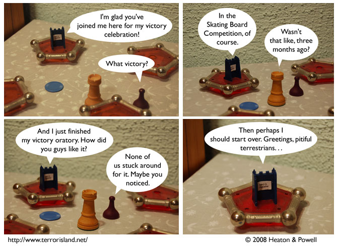

Strip #306
— Monday, May 26, 2008
Don’t you hate it when your dentist won’t stop talking?
Notes, Thoughts, &c.
Ben’s Notes
Warning: spoilers for “Penny Arcade Adventures: On the Rain-Slick Precipice of Darkness, Episode One” follow.
This video game promotes negative stereotypes of mimes, and positive stereotypes of webcartoonists.
This is the end of the spoilers for “Penny Arcade Adventures: On the Rain-Slick Precipice of Darkness, Episode One.”
Lewis’s Notes
We last saw Ned in strip 260, and I, for one, am eager to find out what all he said in the remainder of the speech. This is also good, as it provides us with a roadmap of the next forty or so strips.